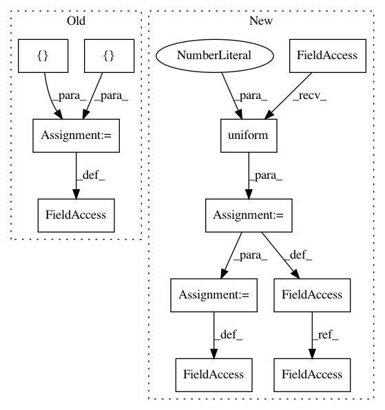

64ac509a6cec89592c6140eebcd9058cb87044f0,examples/statistics/barchart_demo.py,,,#,60
Before Change
Score = namedtuple("Score", ["score", "percentile"])
// GLOBAL CONSTANTS
testNames = ["Pacer Test", "Flexed Arm\n Hang", "Mile Run", "Agility",
"Push Ups"]
testMeta = dict(zip(testNames, ["laps", "sec", "min:sec", "sec", ""]))
def attach_ordinal(num):
helper function to add ordinal string to integers
After Change
student = Student("Johnny Doe", 2, "boy")
scores = dict(zip(testNames,
(Score(v, p) for v, p in
zip(["7", "48", "12:52", "17", "14"],
np.round(np.random.uniform(0, 1,
len(testNames)) * 100, 0)))))
cohort_size = 62 // The number of other 2nd grade boys
arts = plot_student_results(student, scores, cohort_size)
plt.show()
//////////////////////////////////////////////////////////////////////////////////////////////////////////////////////////////////////////////////////////
In pattern: SUPERPATTERN
Frequency: 3
Non-data size: 11
Instances
Project Name: matplotlib/matplotlib
Commit Name: 64ac509a6cec89592c6140eebcd9058cb87044f0
Time: 2019-02-13
Author: elch.rz@ruetz-online.de
File Name: examples/statistics/barchart_demo.py
Class Name:
Method Name:
Project Name: philipperemy/deep-speaker
Commit Name: eea2e033d7e5728d2258f1fc66d3417d8cb047a4
Time: 2020-04-10
Author: premy.enseirb@gmail.com
File Name: v4/triplet_loss.py
Class Name:
Method Name:
Project Name: keras-team/keras
Commit Name: a18932cb658c012808dd78bbd7f5bf1fe712e6c9
Time: 2016-01-15
Author: francois.chollet@gmail.com
File Name: examples/neural_style_transfer.py
Class Name:
Method Name: